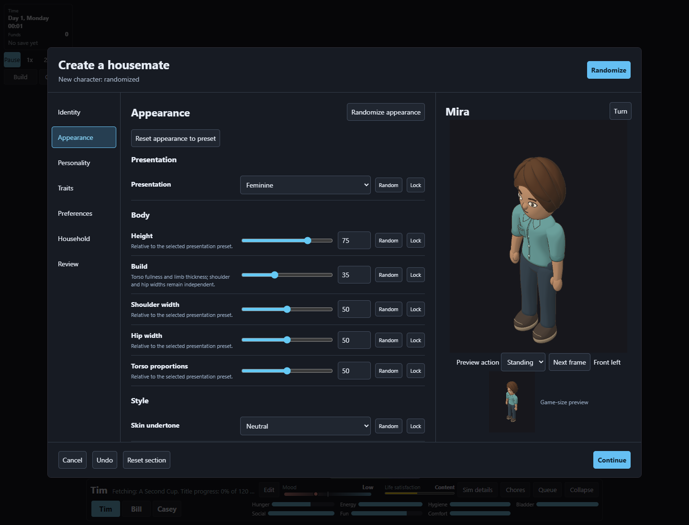
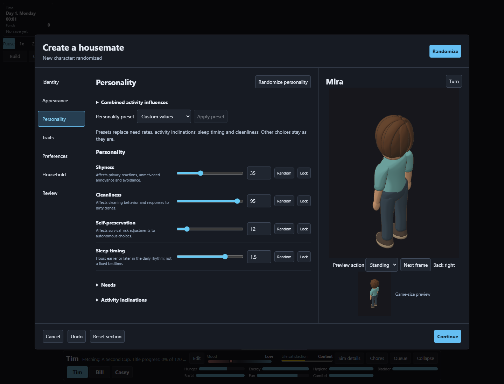
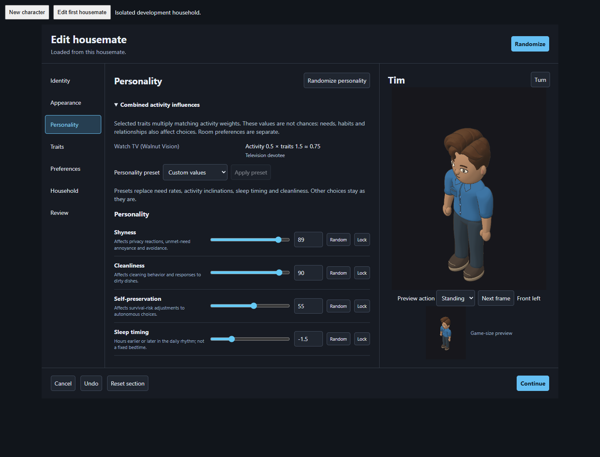
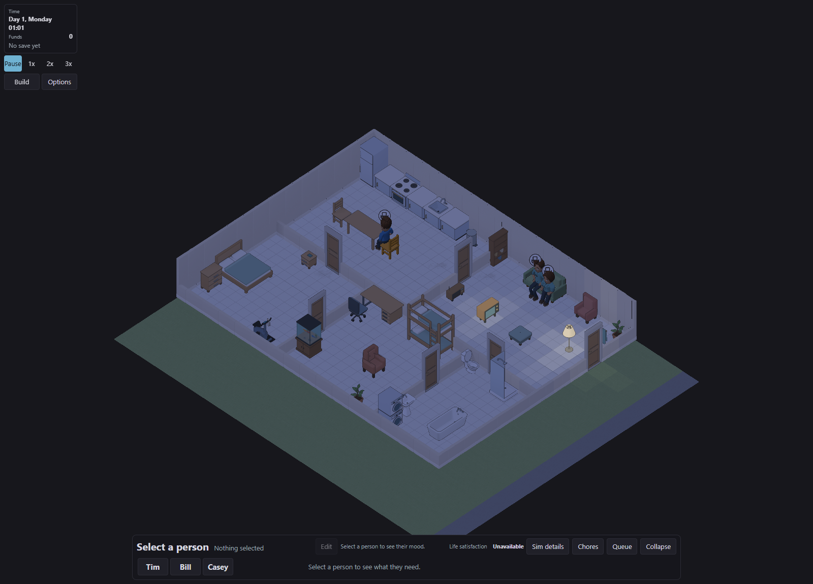
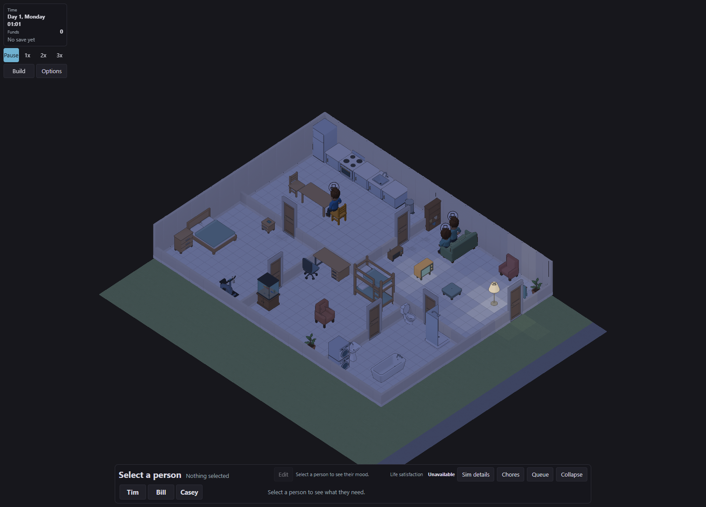
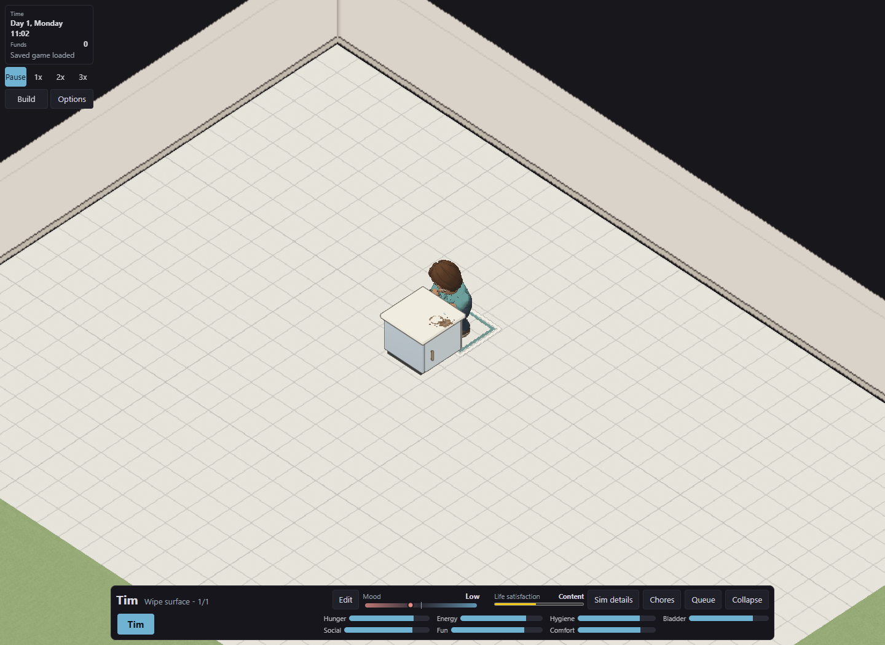
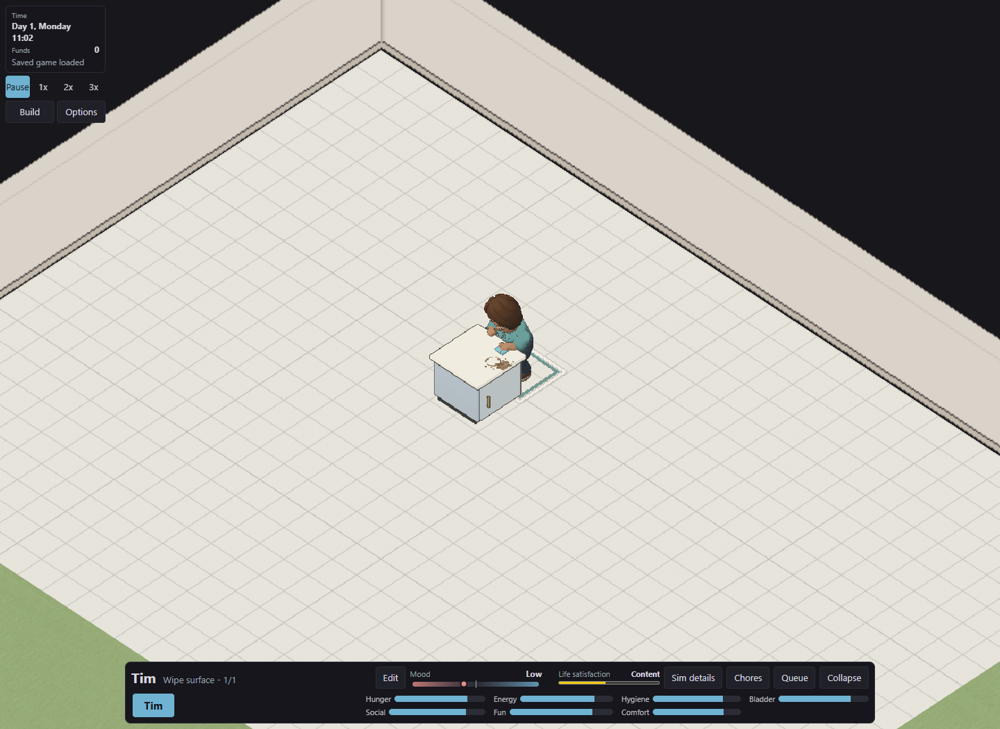
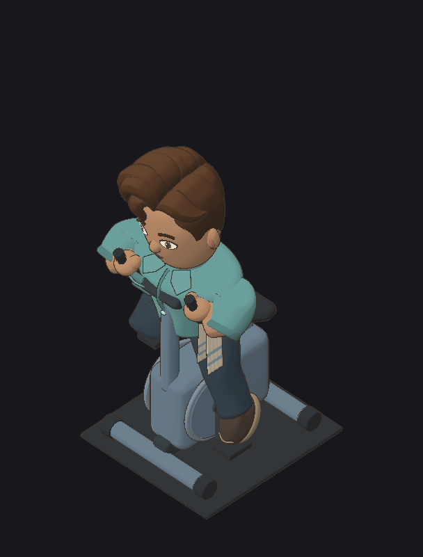
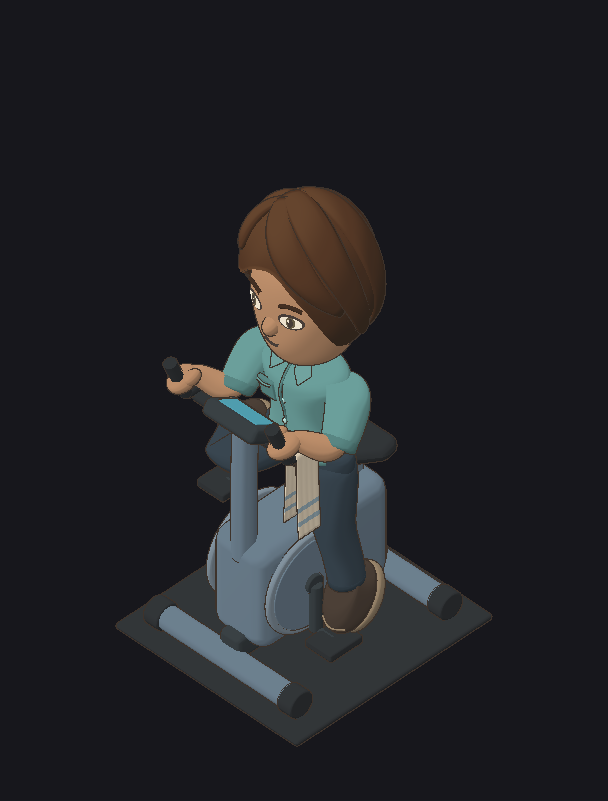

Actual browser captures of the local implementation. Both presentations use the same animation data and pose code.

Feminine preset, bob, height 75, build 35. Shoulder width, hip width and torso proportions are 50.

Actual selected trait and activity contributions, with no change to the running household.

Masculine, height 100, other body sliders 50.
Masculine: height 0, build 100, shoulders 100, hips 0, torso 100.


Feminine: height 0, build 0, shoulders 0, hips 0, torso 100.




The cloth and body have not moved. The counter now uses depth from its actual geometry. Click either image for the complete frame.




Two body configurations, four facings, one shared bicycle animation.